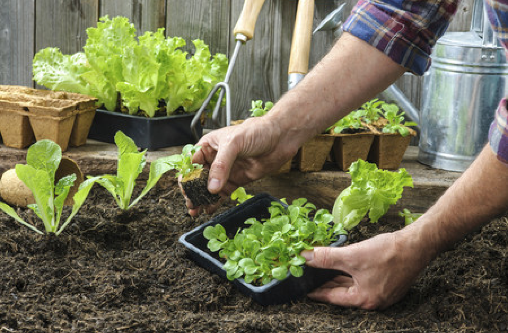

Hortoterapia Urbana
Colhendo Saúde e Bem-Estar: O Poder Transformador da Hortoterapia
A hortoterapia urbana é uma prática que envolve o cultivo de plantas, vegetais e ervas em ambientes urbanos, como jardins comunitários, telhados verdes, hortas verticais e até mesmo em pequenos espaços internos, como apartamentos. Essa atividade combina os benefícios da jardinagem e do contato com a natureza com os desafios e oportunidades específicos encontrados em ambientes urbanos.
No geral, a hortoterapia urbana oferece uma maneira acessível e eficaz de melhorar a qualidade de vida em ambientes urbanos, promovendo tanto o bem-estar pessoal quanto o comunitário.
Benefícios
- Redução do estresse e ansiedade: O contato com a natureza e o ato de cuidar das plantas podem ajudar a reduzir os níveis de estresse e ansiedade, promovendo uma sensação de calma e relaxamento.
- Melhoria da saúde mental: A hortoterapia pode ser uma forma eficaz de lidar com problemas de saúde mental, como depressão e transtorno de estresse pós-traumático, proporcionando um espaço seguro para expressão emocional e autocuidado.
- Estímulo cognitivo: O envolvimento na jardinagem requer planejamento, atenção e resolução de problemas, o que pode ajudar a manter a mente ativa e estimulada, especialmente em idosos ou pessoas com condições cognitivas degenerativas.
- Promoção da saúde física: O trabalho físico envolvido na jardinagem, como cavar, plantar e regar, pode fornecer um exercício leve que melhora a saúde cardiovascular, a força e a flexibilidade.
- Alívio do isolamento social: A participação em atividades de hortoterapia em espaços comunitários pode promover a interação social e ajudar a combater o isolamento, criando uma sensação de pertencimento e conexão com os outros.
- Estímulo sensorial: A hortoterapia envolve todos os sentidos, desde o toque das plantas até o cheiro das flores e o sabor dos vegetais frescos. Essa estimulação sensorial pode aumentar a consciência do ambiente e promover uma sensação de bem-estar geral.
- Melhoria da dieta: O cultivo de alimentos frescos em hortas urbanas pode incentivar hábitos alimentares mais saudáveis, aumentando o consumo de frutas, vegetais e ervas frescas e reduzindo a dependência de alimentos processados.
- Fomento da sustentabilidade: A hortoterapia promove uma conexão mais profunda com o ciclo natural da vida, incentivando práticas agrícolas sustentáveis, como compostagem, uso eficiente da água e cultivo orgânico.
O que oferecemos
- Guias e Dicas: Explore nossos guias para começar sua horta urbana, desde a escolha das plantas até técnicas de cultivo.
- Workshops e Eventos: Participe de workshops e eventos onde você pode aprender habilidades práticas de jardinagem e conhecer outros entusiastas.
- Recursos Educacionais: Acesse artigos e vídeos educativos que explicam os benefícios da hortoterapia e oferecem dicas de como começar.
Como começar
-
Passo 1: Escolha do Espaço
Identifique seu espaço disponível: Avalie onde você poderá cultivar suas plantas. Pode ser uma varanda, jardim vertical, canteiro em um terreno compartilhado, ou até mesmo vasos dentro de casa. Considere a iluminação: Verifique quanto de luz solar direta o seu espaço recebe durante o dia. A maioria das plantas precisa de pelo menos algumas horas de sol para crescer saudável. Avalie o acesso à água: Certifique-se de que você terá acesso fácil à água para regar suas plantas regularmente.
-
Passo 2: Escolha das Plantas
Pense nas suas preferências: Decida que tipo de plantas você gostaria de cultivar. Ervas aromáticas, hortaliças, plantas ornamentais - escolha aquelas que se adequam ao seu espaço e às suas necessidades. Considere o clima e a estação: Escolha plantas que sejam adequadas para o clima da sua região e para a estação do ano. Isso aumenta suas chances de sucesso no cultivo.
-
Passo 3: Preparação do Solo ou Substrato
Prepare o solo ou escolha o substrato adequado: Se você está cultivando em um canteiro, certifique-se de preparar o solo adicionando nutrientes necessários. Se estiver usando vasos ou recipientes, escolha um substrato rico em nutrientes e que permita boa drenagem.
-
Passo 4: Plantio e Cuidados Básicos
Plante suas mudas ou sementes: Siga as instruções de plantio específicas para cada tipo de planta. Certifique-se de deixar espaço suficiente entre as plantas para que possam crescer adequadamente. Regue regularmente: Acompanhe as necessidades de água das suas plantas e mantenha o solo úmido, sem encharcar. Fertilize conforme necessário: Adicione fertilizante orgânico de acordo com as recomendações específicas das plantas que você está cultivando.
-
Passo 5: Acompanhamento e Manutenção
Monitore o crescimento das plantas: Observe o desenvolvimento das suas plantas regularmente. Esteja atento a sinais de pragas ou doenças para que possa agir rapidamente, se necessário. Faça podas e colheitas: Mantenha suas plantas saudáveis realizando podas regulares e colhendo os frutos ou folhas conforme eles amadurecem.
-
Passo 6: Desfrute dos Benefícios
Relaxe e aproveite: Reserve um tempo para simplesmente estar no seu espaço verde. A hortoterapia urbana não se trata apenas de cultivar plantas, mas também de desfrutar dos benefícios mentais e emocionais que elas proporcionam.